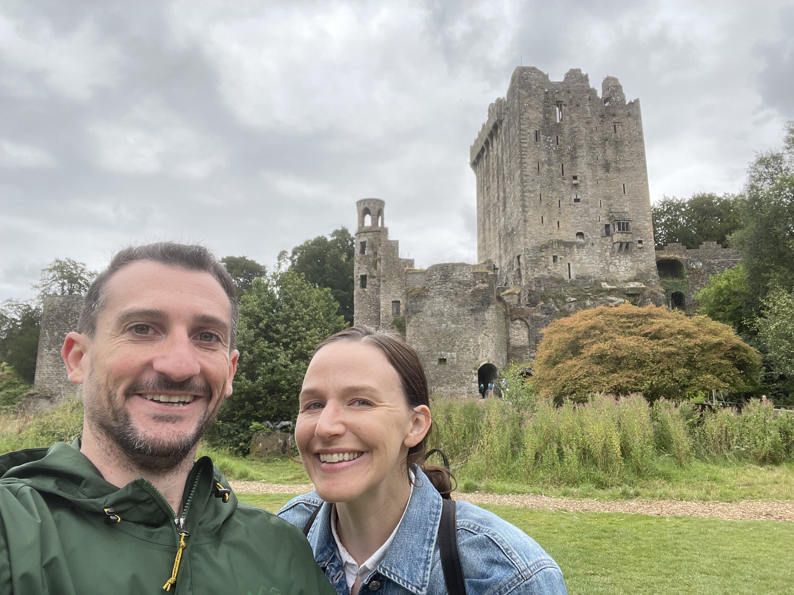
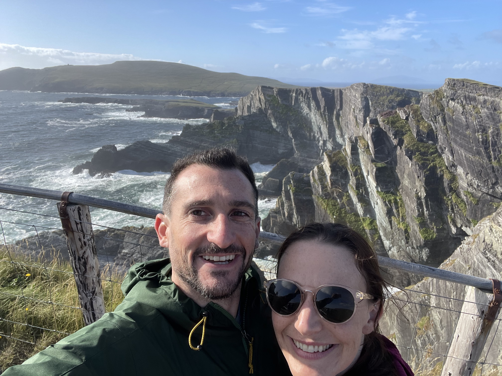
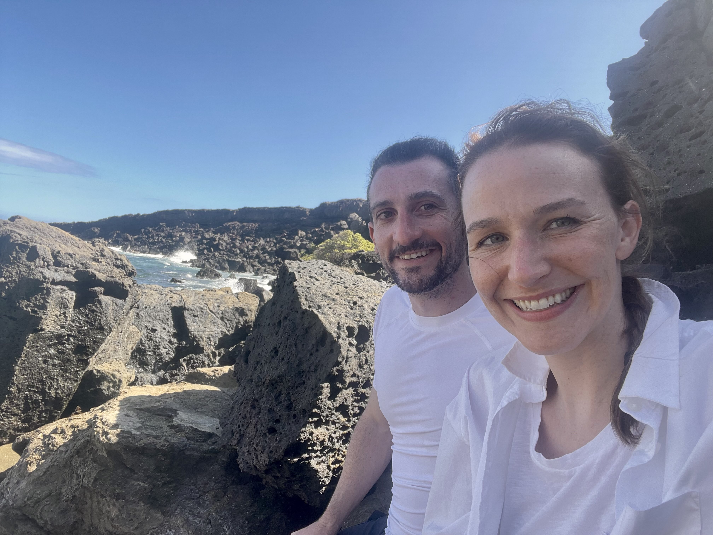

Alex Cravalho
Software Engineer
About Me
Hi, I'm Alex! I'm a logical problem solver, creative, out-of-the box thinker, and sci-fi enthusiast. I am naturally curious and love breaking things down into their respective parts to figure out how they work.
I am a Software Engineer and most recently I was working for IBM as a Platform Engineer. My beginnings in the industry started with full stack software development and I have 5+ years of experience in ReactJS, JavaScript, HTML, CSS, building RESTful APIs and working with both relational and non-relational databases. Since I joined IBM, I've been growing my skills to extend to cloud platforms, CI/CD and Red Hat OpenShift and deepen my knowledge of enterprise IBM software. I love learning new technologies and I'm consistently diving into documentation to teach myself about how different technologies work together and how I can apply those newly learned skills.
During my time at IBM, I obtained two Red Hat Certifications in the OpenShift platform demonstrating an expert command of containers, container management, Kubernetes and OpenShift Application Development. Even though I most recently worked as a Platform Engineer, I've been hoping to find my next role in Frontend or Fullstack Engineering. I love reimagining user experiences and interfaces using React and enjoy designing intuitive and aesthetic applications.
When I'm not programming, I love to travel, lift weights, play video games, roll dice with friends, and speculate over financial investments. In 2023 I got married to my lovely wife Catherine and we're currently living here in Dallas, Texas, while she studies to get her Master's Degree in Counseling. We love exploring the outdoors together and going abroad to experience new places, food, culture and sights. In 2024 we got to take an amazing trip around southern Ireland.

My wife, Catherine, and I at Blarney Castle in Cork, Ireland.

Cliffs of Moher, in County Clare, Ireland.
My wife and I on our honeymoon in Maui, Hawai'i.

Papakōlea Green Sand beach, Big Island, Hawai'i.
Skills
Front-End
React framework that enables server-side rendering, static site generation, and simplified routing for building fast, scalable web applications.
Next.js
A statically typed superset of JavaScript that adds optional type checking and modern features to help developers write safer, more maintainable code.
TypeScript
JavaScript is the first programming language learned and where I wrote my first 'Hello World'
JavaScript
React is the modern framework I prefer to use when building applications. This site was built with React!
React
React Hooks uses only functional components, which streamlines React applications and makes them more understandable and readable
React Hooks
Predictable state container for JavaScript applications that manages state through a single store and unidirectional data flow using actions and reducers.
Redux
Material-UI is a package with pre-built and thoroughly tested user interface components, that make web development faster and easier
Material-UI
A modern styling package that allows developers to build fully customized CSS directly into React components
Styled Components
The very first application I built used only jQuery, vanilla JS, and CSS
jQuery
This is the foundation of all modern web applications
HTML
I style pixel-perfect user interfaces with a deep knowledge of CSS
CSS
Back-End
A high-level, object-oriented programming language known for its readability, simplicity, and wide range of applications from web development to data science.
Python
A lightweight Python web framework that provides simple tools and flexibility for building web applications and APIs.
Flask
A JavaScript runtime for building fast, server-side applications.
Node
Fast, unopinionated web framework for Node.js used to build APIs and web applications.
Express
An exceptional NoSQL database that is flexible and easy to use
MongoDB
Powerful, open-source relational database system known for its reliability, extensibility, and SQL compliance.
PostgreSQL
Widely used relational database management system known for its speed, reliability, and ease of use
MySQL
Cassandra is a scalable, distributed NoSQL database built for high availability and large data volumes.
Apache Cassandra
Data & AI
Vector database designed to store, index, and search high dimensional embeddings for applications like similarity search and machine learning.
ChromaDB
Framework that helps developers build applications by connecting large language models with external data sources and tools through modular components.
LangChain
Lightweight, open-source platform for managing, serving, and deploying large language models locally with efficient resource use.
LiteLLM
A tool that enables running and managing large language models locally for fast, private, and customizable AI-powered applications.
Ollama
This web-based interface provides easy access and management of local large language models through a user friendly dashboard.
OpenWebUi
Global network service that improves website performance and security by providing content delivery, DDoS protection, and DNS management.
Cloudflare
Advanced large language model that generates human-like text and understands complex language tasks with high accuracy and contextual awareness.
gpt-4.1
High performance, open-source large language model optimized for efficiency and accuracy in natural language understanding and generation tasks.
Mistral
Embedding model designed to convert text into high quality vector representations for improved semantic search and machine learning applications.
nomic-embed-text
Enterprise grade platform that integrates generative AI and traditional machine learning, providing tools for building, fine-tuning, and deploying AI models across hybrid cloud environments.
IBM watsonx.ai
Comprehensive toolkit that enables organizations to govern and monitor AI models throughout their lifecycle, ensuring compliance with global regulations, mitigating risks such as bias and drift, and enhancing transparency and accountability in AI deployments.
IBM watsonx.governance
Intelligent data catalog that automates data discovery, quality management, and governance, enabling organizations to curate, understand, and securely access data assets across cloud and on-premises environments.
IBM Knowledge Catalog
Cloud based service that enables building, training, and deploying machine learning models at scale with automated tools and integrated AI lifecycle management.
IBM Watson Machine Learning
Tools
AI-powered coding assistant that helps developers write, debug, and optimize code more efficiently through intelligent suggestions and automation.
IBM watsonx Code Assistant
An AI-driven search and analytics platform that indexes and queries large volumes of structured and unstructured data to uncover insights and support informed decision-making.
IBM watsonx Discovery
A cloud-native automation platform that uses AI to streamline and coordinate business workflows by integrating tasks, data, and applications across multiple systems to improve efficiency and productivity.
IBM Watson Orchestrate
IBM watsonx Assistant is an AI-powered chatbot platform for building conversational interfaces.
IBM watsonx Assistant
This Virtual Assistant uses artificial intelligence that understands customers in context to provide fast, consistent, and accurate answers across any application, device, or channel.
IBM Watson Assistant
An award-winning AI-powered intelligent search and text-analytics platform that eliminates data silos and retrieves information buried inside enterprise data.
IBM Watson Discovery
I used this technology in combination with a Virtual Assistant to enable fast and accurate speech transcription
IBM Watson Speech to Text
An API cloud service that enables you to convert written text into natural-sounding audio in a variety of languages and voices within an existing application or within Watson Assistant.
IBM Watson Text to Speech
This powerful and flexible CI/CD pipeline tool integrates seamlessly with Openshift. It provides Kubernetes-style resources for declaring CI/CD concepts
Tekton
A declarative, GitOps continuous delivery tool for Kubernetes that allows for easy, automated deployment and mananagment of applicaitons in controlled environments
Argo CD
It's a hosted, distributed continuous integration service used to build and test software projects hosted on GitHub.
TravisCI
An amazing tool that helps accelerate the design, building, and documentation of API services
Swagger
My preferred method of containerization for deployment
Docker
I have experience implementing Nginx as a load balancer to scale a service for high web traffic
Nginx
My favorite version control system that I use for most of my applications
Git/Github
An open-source load testing tool that makes performance testing easier
K6
A cloud based load and scalability testing service
Loader.io
JavaScript module bundler that compiles, transforms, and optimizes application assets like scripts, styles, and images into efficient bundles for deployment.
Webpack
A JavaScript compiler that works well with both JavaScript and TypeScript
Babel
A simple yet powerful combo for testing React components
Jest/Enzyme
Mocha is a JavaScript testing utility used in combination with Chai an assertion library for testing
Mocha/Chai
Eslint helps programmers follow best practices by identifying problematic code during the development process
Eslint
Trello is an easy to use collaboration tool that lets users organize projects on boards. This is very helpful in Kanban style workflow management
Trello
Puppeteer is a Node.js library that provides high-level API control of a headless Chrome browser
Puppeteer
Cloud, Scaling & Methodology
An enterprise-grade container application platform built on Kubernetes that streamlines development, deployment, and management of applications with integrated tools and enhanced security features.
Red Hat Openshift
An open-source system for automating the deployment, scaling, and management of containerized applications across clusters of servers.
Kubernetes
Open-source automation tool that simplifies configuration management, application deployment, and task automation using simple, human-readable playbooks.
Ansible
Infrastructure-as-code tool that enables users to define, provision, and manage cloud and on-premises resources through declarative configuration files.
Terraform
CI/CD is a development practice that automates code integration, testing, and deployment to accelerate and streamline software delivery.
CI/CD
An architectural style for web services that uses standard HTTP methods to access and manipulate resources through stateless, client-server interactions.
REST
I have experience with Agile practices including test-driven development, executing sprints, pair programing, and cross-team coordination
Agile
A development practice where tests are written before code to guide design and ensure functionality through continuous testing.
TDD
Model-View-Controller design pattern reinforces separation of concerns and good programming practices
MVC
Software Applications

Cybertronics Workshop
Docker | LiteLLM | Ollama | OpenWebUi | Cloudflare | Nginx | gpt-4.1
After getting a taste of what I could do with LLMs through Ollama on my local hardware, I decided to explore deploying a user interface for my own models as well as getting some of the top-teir models from the big LLM players. I found OpenWebUi to be a robust user interface tool that would allow me to test out models side by side. Eventually I settled on deploying OpenWebUi on a Virtual Private Server (VPS) where I could make local models available through Ollama, or connect it to cutting-edge models through APIs. To do this, I deployed LiteLLM which allows users to monitor LLM API spend and manage over 100 leading models like GPT-4, Gemini, Llama, Claude and more. I deployed nginx as a proxy manager so that I could route users of OpenWebUi to my own web domain, cybertronicsworkshop.com, while keeping it secure. My future plan for this is to combine what I learned in my local Ollama project and expand this to a full RAG system where documents can be uploaded, then any leading model can be used to query those documents.

Ollama Local RAG
TypeScript | Ollama | LangChain | ChromaDB | nomic-embed-text | Mistral
Recently I got a chance to expriment with Ollama on my local computer and I was impressed. Playing with AI on my local computer is fun, but the models available to my local machine don't have enough data. I wanted to see if I could improve my local LLM results by making it into a fully Retrieval-Augmented Generation (RAG) system with a vector database. I wanted to upload some documents and add relevant info to my queries to improve results. Going in with a $0 budget, I wanted the system to be completely cost free and private. In the end I was able to make a completely private RAG system. I created scripts in TypeScript, that ingest new data into my vector storage, embed query text with nomic-embed-text model and generate a response with Mistral, all on my local machine.

GreenPDF Internal Tool
React | TypeScript | Express | Node | Material-UI | Puppeteer
I built an internal tool for a small landscaping company that wanted to update its business to include eco-friendly practices. The owner of the company wanted to remove all paper records and move the company to a fully digital platform. This application captures relevant company data, transforms it into a beautiful PDF document and emails it to the company's cloud storage system at the click of a button.

Crash Stats
React | React Hooks | JavaScript | Express | Node | MongoDB | AWS | Docker
Love Hockey? I do too! I created this application for sports fanatics who want an edge in their Fantasy Hockey season. Want to know if a particular fantasy trade is worth it? This app can evaluate a particular player trade based on real game statistics from the NHL public API data. It also allows you to input your own metrics for each category, which varies across fantasy leagues.

Soundwave Music
React | JavaScript | Express | Node | PostgreSQL | Cassandra | Nginx | Docker | Loader.io | New Relic
I enjoy listening to music on Pandora, Spotify, and Soundcloud, so I couldn't wait to help contribute to an app for music-lovers! I worked on a team to build out the back end of this application to scale for high-web traffic. I completely replaced and scaled the back-end of the Related Tracks component to handle over 55 million records. I improved efficiency by optimizing database query speed from 3 seconds to less than 25 milliseconds. I designed and engineered the system architecture to include multiple servers and load balancer, increasing throughput by 33%.
Experience
IBM Corporation
Platform Engineer, Client Engineering
2024 - 2025
In 2024 my role expanded even further. While continually working with application development, DevOps, hybrid cloud deployments and watsonx integrations, Platform Engineers were tasked to add even more to our technology arsenal. I was responsible for managing, configuring, and transforming client infrastructure. Platform Engineers, architect and design new solutions to client problems using Terraform, Ansible, Red Hat OpenShift, cloud platforms, IBM's proprietary Cloud Paks, and automation. Our Midwest team focused on revolutionizing client business processes through AI and automating for cost savings with Watson Orchestrate. I built configured, developed, and deployed end to end solutions, APIs and microservice applications for large enterprises like Banks, Airlines and Retail giants.
IBM Corporation
Technology Engineer, Client Engineering
2022 - 2024
In 2022, my role changed to include even more awesome IBM technology, tools, and patterns. This increased the scope of the role to go beyond, full stack application development, DevOps, and cloud migrations. I worked on the U.S. National Midwest team, where we built Pilots, Proof of Concepts, and Minimum Viable Products to demonstrate business value of IBM software to clients. My team was an interdisciplinary group of Software Architects, AI Engineers, Platform Engineers, Designers and Business leaders, who all collaborate to ensure client success. As a Technology Engineer I worked with the Solution Architects and Designers to solve client problems through our technology. We built end to end solutions, using automation, ci/cd pipelines, sass integrations, and integrated microservice applications to curate customized user experiences. Here I was able to master the watsonx platform which includes AI, AI governance, machine learning and configuring those parts within integrated Virtual Agents.
IBM Corporation
Cloud Engineer, Client Engineering
2021 - 2022
It is my great pleasure and privilege to say previously worked for IBM. I started on the IBM Client Engineering team as a Cloud Engineer, a specialized engineering position that helps clients accelerate their Cloud and Hybrid Cloud transformations. Part full-stack, part DevOps, I worked to build MVPs for IBMs clients in the Midwest region. Among the awesome technology I was allowed to work with, I especially loved building out an AI Virtual Assistant, utilizing IBM Watson Assistant, Watson Discovery, Watson Speech To Text, and Watson Text to Speech. I love the dedication of IBM to its employees as they provide endless training, knowledge and upskilling opportunities. IBM is dedicated to training its employees on Red Hat Openshift, which is an Enterprise level Kubernetes container management system with tons of additional features. Beyond earning Red Hat certifications, IBM wants its employees to be cross-functional, educating employees in AI, Design Thinking, Data Science and Sales.
Galvanize Inc. / K12 Inc. / Stride Inc.
Technical Mentor, Software Engineering Immersive
2020 - 2021
Seeing my teaching experience as extremely valuable in the engineering field, Galvanize interviewed me for the Technical Mentor role directing and overseeing the education of students as a lead instructor in a geographical location. I accepted the position as a Technical Mentor for Galvanize Inc.'s Hack Reactor Software Engineering Immersive program and worked with engineering students in their journey to become fully trained software engineers. In this role, I taught classes covering all aspects of web development in our Denver and later Seattle campuses. I functioned as the company's main technical resource in those locations and guided students through front-end development, back-end development, and deployment. Among my many teaching responsibilities, I also participated in curriculum improvement for the company nationally and contributed to the Galvanize codebase internally. During my time with Galvanize they were purchased by K12 Inc. and then rebranded to Stride Incorporated to reflect the new acquisition.
Galvanize Inc. / K12 Inc. / Stride Inc.
Software Engineering Immersive Resident
2019 - 2020
Hack Reactor is a full-time Software Engineering Immersive bootcamp covering over 1000 hours of practical hands-on experience in full-stack software engineering. The parent company, Galvanize Inc., hired me to work as part of the Hack Reactor education team managing and mentoring junior engineers on engineering principles. In that role, I performed code reviews for the junior engineers and gave them guidance on how to improve their code and problem solve across the full-stack. This mentorship included computer science fundamentals, best practices, front-end and back-end development, and also app deployment technologies (including AWS EC2, S3, Docker, and various load testing tools).
United States Peace Corps
English Language Instructor
2015 - 2017
The United States Peace Corps is a U.S. governmental organization that provides aid to foreign countries. The Peace Corps mission is to promote world peace and friendship by helping interested countries meet their needs for trained men and women. To achieve this goal, I worked with the Peace Corps as a secondary English Language Instructor in Madagascar, Africa. Going beyond the duties of a teacher, I developed a number of projects to benefit the native community where I lived, learned the native language, and learned the local culture while residing in the country for over two years.
Education
Foothill College
2025 - Present
Hack Reactor, Software Engineering Immersive
2019
UC Santa Cruz, Bachelor of Arts
2011